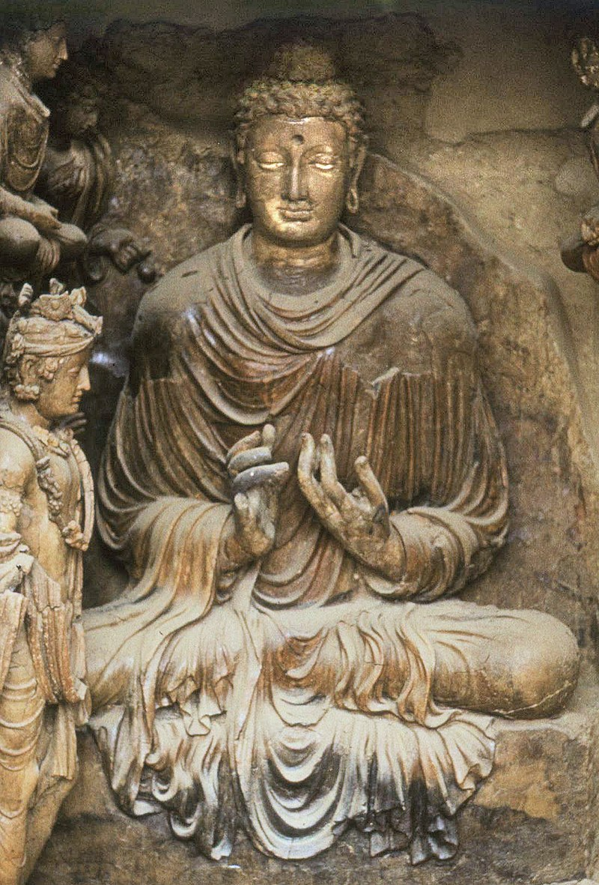
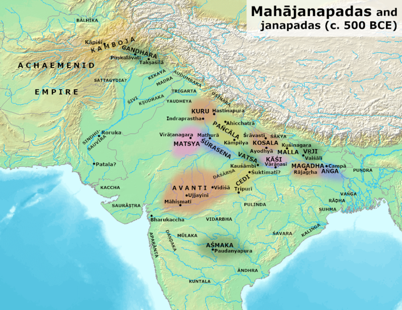
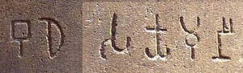
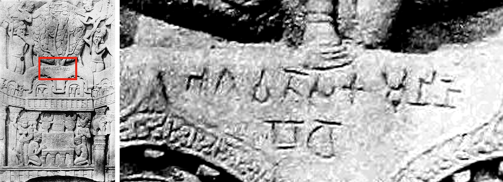

Gautama Buddha, popularly known as the Buddha (also known as Siddhattha Gotama or Siddhārtha Gautama[note 3] or Shakyamuni), was an ascetic, a religious leader and teacher who lived in ancient India (c. 6th to 5th century BCE or c. 5th to 4th century BCE).[6][7][8][note 4] He is regarded as the founder of the world religion of Buddhism, and revered by Buddhists as an enlightened being,[9] who rediscovered an ancient path to freedom from ignorance, craving and the cycle of rebirth and suffering. He taught for around 45 years and built a large following, both monastic and lay.[10] His teaching is based on his insight into the arising of suffering or dissatisfaction and its ending—the state called Nirvana (lit. vanishing or extinguishing).
The Buddha was born into an aristocratic family in the Shakya clan, but eventually renounced lay life. According to Buddhist tradition, after several years of mendicancy, meditation, and asceticism, he awakened to understand the workings of the cycle of rebirth and how it can be escaped. The Buddha then traveled throughout the Gangetic plain, teaching and building a religious community. The Buddha taught a middle way between sensual indulgence and the severe asceticism found in the Indian śramaṇa movement.[11] He taught a training of the mind that included ethical training, self-restraint, and meditative practices such as jhana and mindfulness. The Buddha also critiqued the practices of Brahmin priests, such as animal sacrifice and the caste system.[12]
A couple of centuries after his death he came to be known by the title Buddha, which means "Awakened One" or "Enlightened One".[13] Gautama's teachings were compiled by the Buddhist community in the Vinaya, his codes for monastic practice, and the Suttas, texts based on his discourses. These were passed down in Middle Indo-Aryan dialects through an oral tradition.[14][15] Later generations composed additional texts, such as systematic treatises known as Abhidharma, biographies of the Buddha, collections of stories about the Buddha's past lives known as Jataka tales, and additional discourses, i.e. the Mahayana sutras.[16][17][18] Due to his influence on Indian religions, in Vaishnavism he came to be regarded as the 9th avatar of Vishnu.
Names and titles:

Besides "Buddha" and the name Siddhārtha Gautama (Pali: Siddhattha Gotama), he was also known by other names and titles, such as Shakyamuni ("Sage of the Shakyas").[19][note 5] The clan name of Gautama means "descendant of Gotama", and comes from the fact that Kshatriya clans adopted the names of their house priests.[20][21]
In the early texts, the Buddha also often refers to himself as Tathāgata (Sanskrit: [tɐˈtʰaːɡɐtɐ]). The term is often thought to mean either "one who has thus gone" (tathā-gata) or "one who has thus come" (tathā-āgata), possibly referring to the transcendental nature of the Buddha's spiritual attainment.[22]
A common list of epithets are commonly seen together in the canonical texts, and depict some of his spiritual qualities:[23]

According to the Buddhist tradition, Gautama was born in Lumbini, now in modern-day Nepal, and raised in Kapilavastu, which may have been either in what is present-day Tilaurakot, Nepal or Piprahwa, India.[note 1] According to Buddhist tradition, he obtained his enlightenment in Bodh Gaya, gave his first sermon in Sarnath, and died in Kushinagar.
One of Gautama's usual names was "Sakamuni" or "Sakyamunī" ("Sage of the Shakyas"). This and the evidence of the early texts suggests that he was born into the Shakya clan, a community that was on the periphery, both geographically and culturally, of the eastern Indian subcontinent in the 5th century BCE.[67] The community was either a small republic, or an oligarchy. His father was an elected chieftain, or oligarch.[67] Bronkhorst calls this eastern culture Greater Magadha and notes that "Buddhism and Jainism arose in a culture which was recognized as being non-Vedic".[68]
The Shakyas were an eastern sub-Himalayan ethnic group who were considered outside of the Āryāvarta and of ‘mixed origin’ (saṃkīrṇa-yonayaḥ, possibly part Aryan and part indigenous). The laws of Manu treats them as being non Aryan. As noted by Levman, "The Baudhāyana-dharmaśāstra (1.1.2.13–4) lists all the tribes of Magadha as being outside the pale of the Āryāvarta; and just visiting them required a purificatory sacrifice as expiation" (In Manu 10.11, 22).[69] This is confirmed by the Ambaṭṭha Sutta, where the Sakyans are said to be "rough-spoken", "of menial origin" and criticised because "they do not honour, respect, esteem, revere or pay homage to Brahmans."[69] Some of the non-Vedic practices of this tribe included incest (marrying their sisters), the worship of trees, tree spirits and nagas.[69] According to Levman "while the Sakyans’ rough speech and Munda ancestors do not prove that they spoke a non-Indo-Aryan language, there is a lot of other evidence suggesting that they were indeed a separate ethnic (and probably linguistic) group."[69] Christopher I. Beckwith identifies the Shakyas as Scythians.[70]

No written records about Gautama were found from his lifetime or from the one or two centuries thereafter. But from the middle of the 3rd century BCE, several Edicts of Ashoka (reigned c. 269–232 BCE) mention the Buddha, and particularly Ashoka's Lumbini pillar inscription commemorates the Emperor's pilgrimage to Lumbini as the Buddha's birthplace, calling him the Buddha Shakyamuni (Brahmi script: 𑀩𑀼𑀥 𑀲𑀓𑁆𑀬𑀫𑀼𑀦𑀻 Bu-dha Sa-kya-mu-nī, "Buddha, Sage of the Shakyas").[82] Another one of his edicts (Minor Rock Edict No. 3) mentions the titles of several Dhamma texts (in Buddhism, "dhamma" is another word for "dharma"),[83] establishing the existence of a written Buddhist tradition at least by the time of the Maurya era. These texts may be the precursor of the Pāli Canon.[84][85][note 9]

"Sakamuni" is also mentioned in the reliefs of Bharhut, dated to c. 100 BCE, in relation with his illumination and the Bodhi tree, with the inscription Bhagavato Sakamunino Bodho ("The illumination of the Blessed Sakamuni").[86]The oldest surviving Buddhist manuscripts are the Gandhāran Buddhist texts, found in Afghanistan and written in Gāndhārī, they date from the first century BCE to the third century CE.[87]
On the basis of philological evidence, Indologist and Pali expert Oskar von Hinüber says that some of the Pali suttas have retained very archaic place-names, syntax, and historical data from close to the Buddha's lifetime, including the Mahāparinibbāṇa Sutta which contains a detailed account of the Buddha's final days. Hinüber proposes a composition date of no later than 350–320 BCE for this text, which would allow for a "true historical memory" of the events approximately 60 years prior if the Short Chronology for the Buddha's lifetime is accepted (but he also points out that such a text was originally intended more as hagiography than as an exact historical record of events).[88][89]